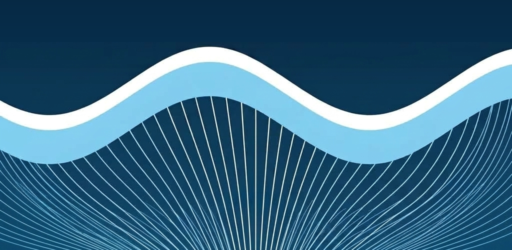

Sazanami は、動画の共有とRSS購読をひとつにまとめたアプリです。 Mastodon などと同じ「連合(ActivityPub)」の仕組みに対応しており、 一つの会社やサーバーに縛られない、自由な情報の発信・受信を目指しています。
主な機能
- Mastodon等と同じ ActivityPub に対応し、他のサーバーとつながる連合機能
- 動画の投稿・視聴、フォロー、いいねなどの基本的なSNS機能
- RSSリーダー機能で好きなブログや動画・音声配信をまとめて追いかけられる
- 分散型なので、一つの企業に依存しない自由な情報発信・受信
名前の由来
さざ波のように、動画が視聴者から視聴者へ、サーバーからサーバーへと 静かに広がっていく様子から「Sazanami(さざなみ)」と名付けました。